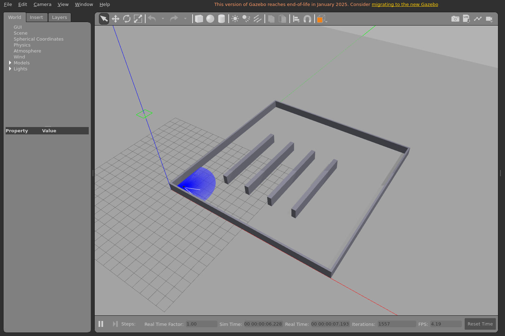
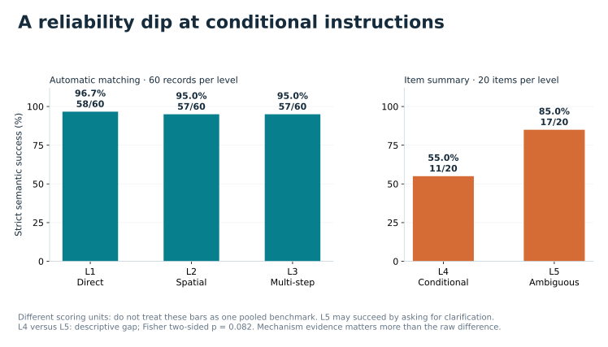
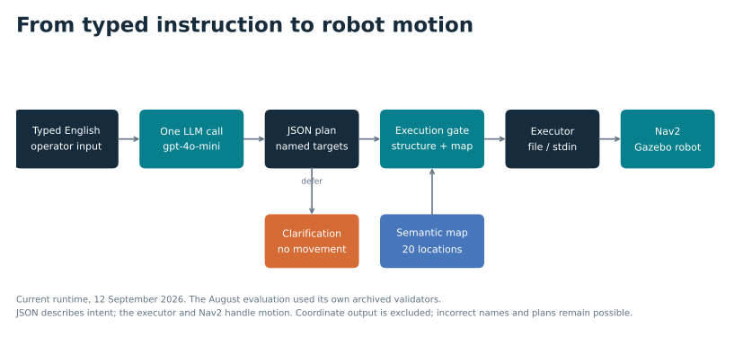
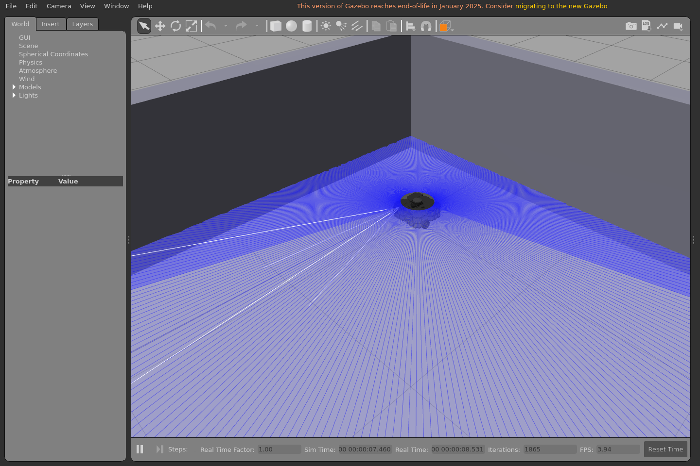
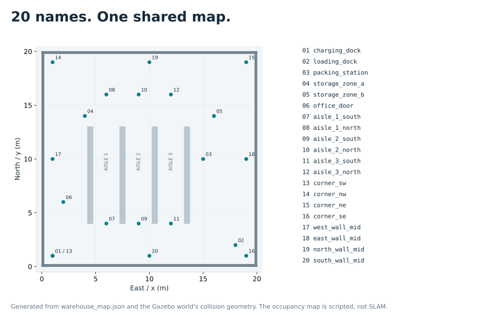
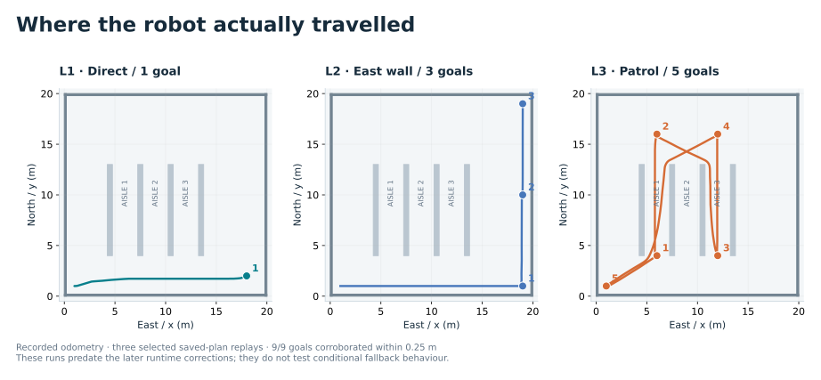
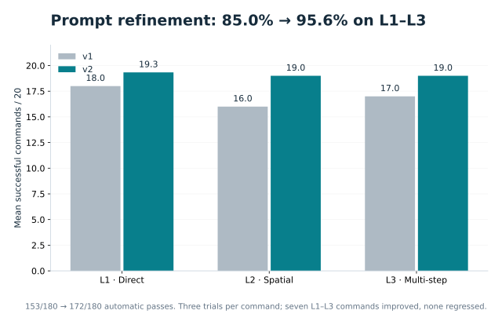
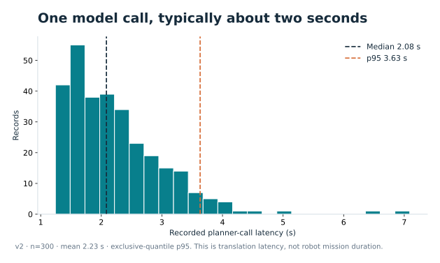
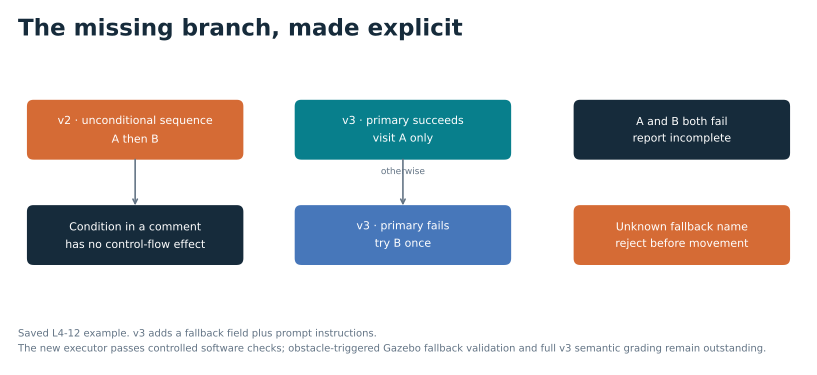
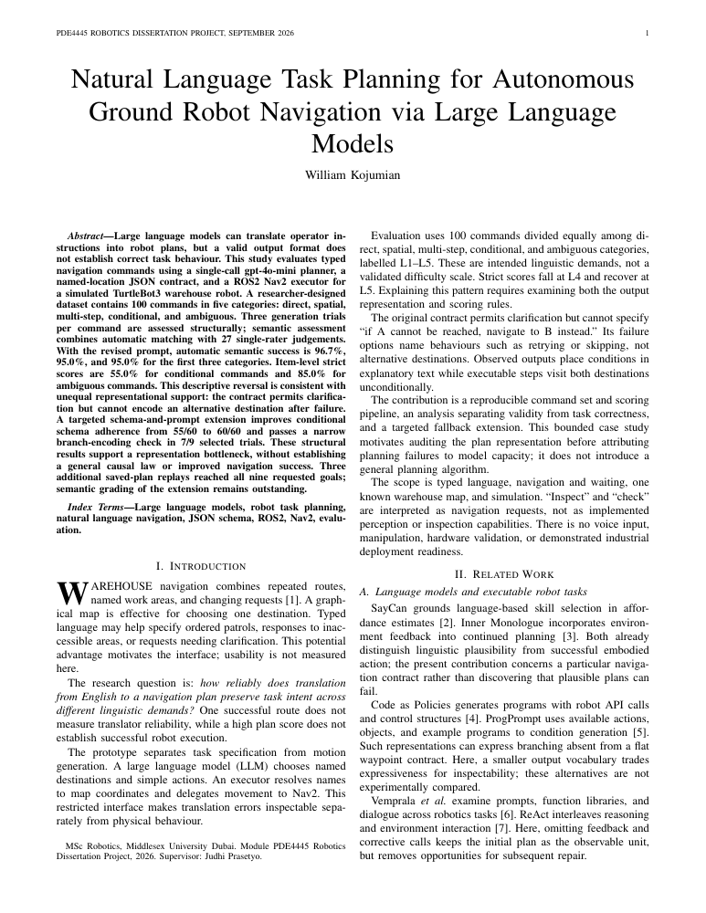

Direct
“Go to the loading dock.”
A typed command becomes a structured plan, then a warehouse robot follows it. The research asks how reliably that translation holds as the instructions change.
Natural Language Task Planning for Autonomous Ground Robot Navigation via Large Language Models

A command can be clear while the plan format cannot express its condition. The evidence identifies representation as one limiting factor in reliable translation.
“Go to the loading dock.”
“Move along the east wall from south to north.”
“Patrol aisles 1 and 3, then return to the charging dock.”
“Inspect A; if it is unreachable, inspect B instead.”
“Go check that thing near the door.”
Illustrative category descriptions. The authored L1–L5 scale is not a validated universal measure of language difficulty.

No voice input, agent loop or re-prompting. The model names places; the executor resolves those names and sends navigation goals to Nav2.

The model outputs names such as loading_dock. Unknown primary or fallback names are rejected by the current execution gate. A valid name can still be the wrong destination for the command.
v3 adds goto_fallback and fallback_target, with accompanying prompt instructions. Schema adherence rises from 55/60 to 60/60 on L4; the selected three-command branch diagnostic rises from 0/9 to 7/9.
Genuine Gazebo captures and recorded odometry. Visual evidence is linked to its run, rather than presented as a general reliability claim.
A fresh capture using the corrected runtime. Nav2 reported 1/1 goals reached. The clip compresses 130 captured frames into 8.67 seconds; it is not real-time playback.
Download MP4 ↓ · Goal log
TurtleBot3 Waffle in the actual warehouse. Blue rays show the simulated laser scan. This is a static capture, not a photograph of purchased hardware.
Download full screenshot ↓These three archived replays used the pre-fix executor. The display reconstructs stored positions; it does not run a simulator or a new planner call.
Playback: 8× recorded simulation time. Numbered dots mark requested destinations.
Download all three route plots ↓The evidence comes from different stages. New execution checks do not change the original translation scores.
v1/v2: 300 records each. v3: 60 L4 records. Original results and grading files preserved.
1/1 + 3/3 + 5/5 goals, with recorded positions within 0.25 m. Single runs; no obstacle trials.
Shared input gate, conditional fallback and failure status. Tests passed in Windows and WSL; package rebuilt.
Human semantic grading, independent grading and controlled Gazebo fallback trials remain necessary. No hardware deployment.
The saved v2 alternative-destination example still visits B unconditionally. A runtime gate can reject an invented name; it cannot infer that an otherwise valid step is wrong for the operator's intent.
Read the runtime correction record →Also documented: prompt/test overlap, uncertain grading blinding, mixed denominators, one grader and one model/map.
Candidate components, supplier snapshots, USD/AED planning costs and integration decisions. These are future options, not equipment used to obtain the study results.

PNG for slides, SVG for editing and PDF for print. Captions retain the sample sizes, dates and limits behind each figure.
8 figures

20 location names over the actual world geometry.

Three odometry traces; selected 1-, 3- and 5-goal replays.
Strict success with scoring units shown explicitly.

Automatic L1–L3 success over three trials.

Recorded v2 planner-call times, n=300.
Typed input, shared execution gate, executor and Nav2.

The representation gap and later runtime checks.

An unbuilt hardware concept; separate from the study.

Includes the original evaluation and three Gazebo replays. It predates the later runtime corrections; read the accompanying update notes before reuse.
All eight figure families, the MP4, simulation screenshots, report snapshot, and attribution notes in one archive.
Download presentation pack ↓{kind=link}
{kind=link}
{kind=link}
{kind=link}
{kind=link}
{kind=link}
{kind=link}
{kind=link}
{kind=link}
{kind=link}
{kind=link}
{kind=link}
{kind=link}
{kind=link}
{kind=link}